Invoice Creation & Payment
How a CBO Invoice Manager submits a monthly invoice against an approved budget and that month's certified attendance, how it moves through the Operations Analyst (OA) → Operations Director (OD) review chain inside ECMS, and how ECMS finally hands it off to FAMIS so the vendor actually gets paid.
Overview
An invoice is the last step in the money chain: a Budget Creator builds the site's yearly budget, DOE approves it, an Attendance Taker records and certifies each month's attendance, and only then can the CBO's Invoice Manager submit that month's invoice requesting payment. Like a budget, an invoice goes through the same two-stage OA → OD review chain before it's considered fully approved. Once it clears that chain, ECMS automatically hands the invoice off to FAMIS, the city's financial system, which is what actually issues the payment — and ECMS later checks back with FAMIS to see whether that payment was sent, paid, or rejected.
Steps
1Confirm the budget is approved
DO Before starting a new invoice, open the site's Budget record and check its approval-stage progress bar and Status field.
RESULT Cedar Point Early Childhood Academy's budget B-00000057 shows Approved by DOE, with the page's own guidance text confirming: "The budget has been approved by the Department of Education team. Invoices may now be submitted for this budget."
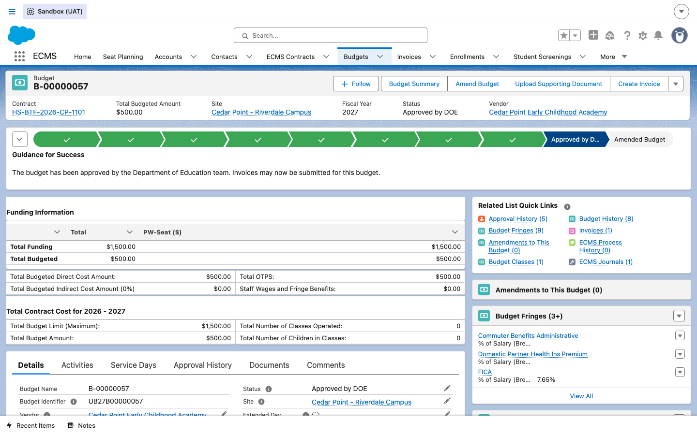
2Log in as the Invoice Manager
DO As the CBO's provisioned Invoice Manager, log into the vendor portal. (Cedar Point's site contact Damien Ortiz was provisioned with Invoice Management access during site setup — see the Vendor & Site Setup guide.)
RESULT The portal home page loads with a Create Invoice quick-action tile alongside Create Budget, Create Enrollment, and Report Incident.
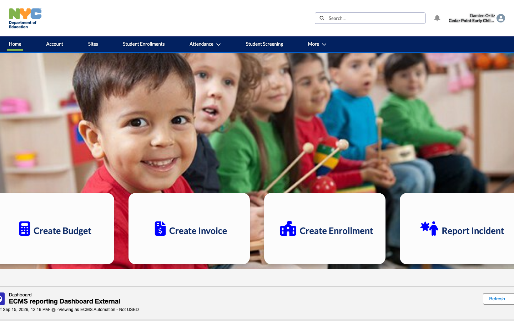
3Open the vendor's Invoices list
DO Click the Create Invoice tile.
RESULT ECMS opens the portal's Invoices list, scoped to this vendor. Cedar Point already has one invoice in progress, INV-00021, for July, Status Saved Invoice, still linked to Budget B-00000057. From here the Invoice Manager can click New to start another invoice, or continue an existing one.
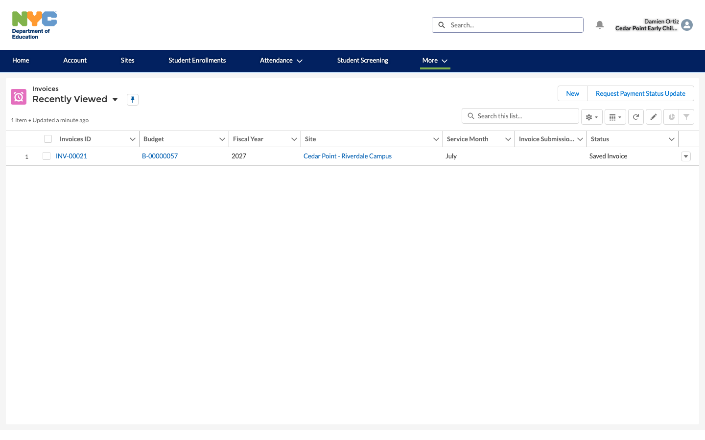
4Review the saved invoice
DO Open INV-00021 and review its detail page: Site, Service Month, Invoice Total Amount, and the linked Budget, before submitting it.
RESULT The invoice's own status stepper shows Saved Invoice as the current stage, with guidance text: "Vendor has created the invoice and is still adding information prior to submitting for approval." The Submit Invoice button is available in the action bar, and Approval History is still empty (0) — nothing has been submitted yet.
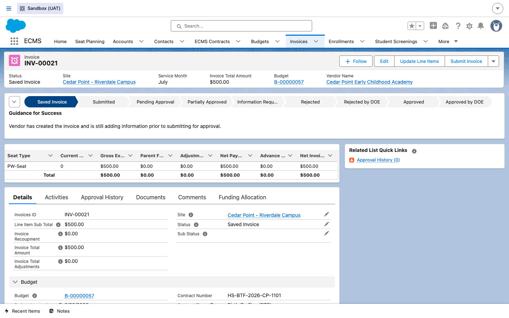
5Submit the invoice
DO Click Submit Invoice in the action bar.
RESULT The invoice's status advances along the stepper from Saved Invoice to Submitted, then to Pending Approval, and an Approval History entry is created recording the submission. The example below (INV-00017, a different vendor's invoice further along in its real lifecycle than Cedar Point's) shows exactly what that looks like once submitted.
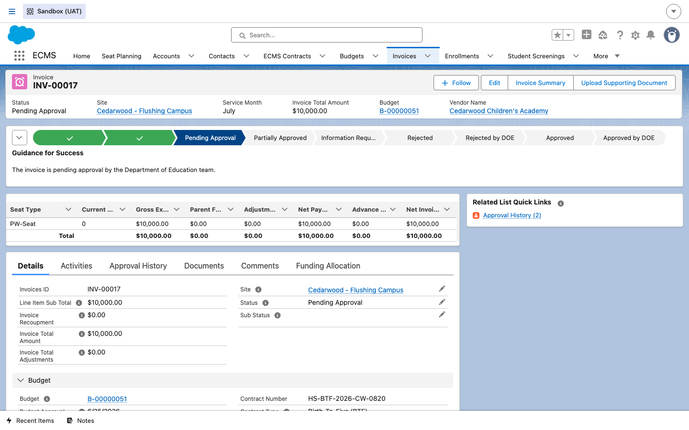
6Operations Analyst (OA) review
DO As the Operations Analyst, open the invoice's Approval History tab and click Approve (or Reject) on the pending OA Approval step.
RESULT The Approval History list shows two rows so far: Approval Request Submitted and OA Approval (assigned to Oscar Adams, still Pending). This is the same tab the onboarding materials describe as showing "each step — submission, Operations Analyst review, and Operations Director review — with who acted on it and when."
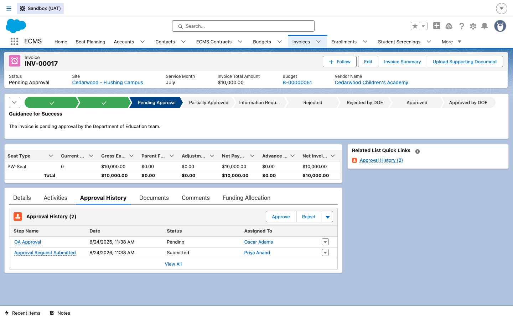
7Operations Director (OD) final approval
DO Once the OA approves, the invoice routes to the Operations Director for the second and final sign-off. The OD reviews the same record and approves it.
RESULT The invoice's status stepper reaches the end: Approved by DOE, with guidance text "The invoice has been approved by the Department of Education team." Because Cedar Point's own invoice hasn't reached this stage yet in the UAT sandbox, the screenshot below uses a different, further-along example invoice, INV-00031 for FAMIS-2422 Gamma Youth Academy, to show what a fully-approved invoice looks like.
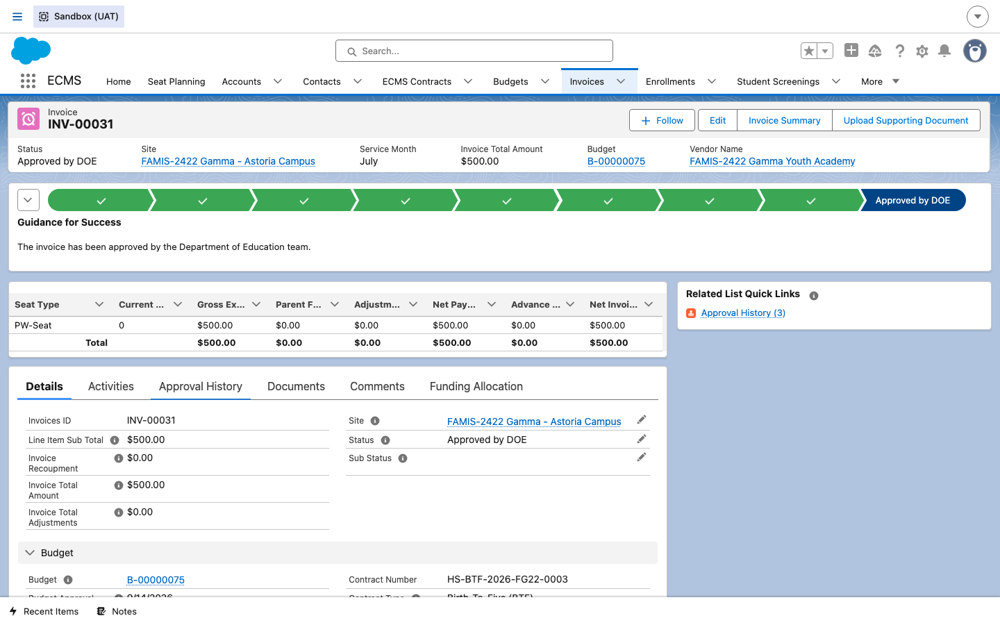
8Read the full Approval History
DO Open the Approval History tab on that same fully-approved invoice.
RESULT All three steps are now visible with a name, a date/time, and a status: Approval Request Submitted (Priya FamisGamma), OA Approval — Approved (Oscar Adams), and OD/DOD Approval — Approved (Olivia Dean). This is the complete audit trail referenced in the ECMS onboarding overview.
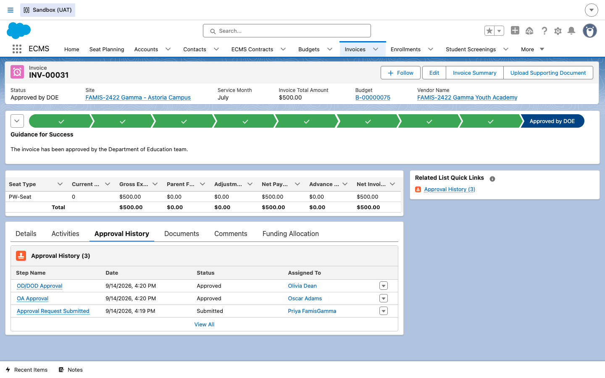
9ECMS sends the invoice to FAMIS
DO No manual action is needed here — once an invoice reaches Approved by DOE, ECMS automatically sends it to FAMIS to trigger the payment. Scroll to the FAMIS Attributes section on the Details tab to see the result.
RESULT INV-00031 now shows a FAMIS Document Number
(FD-2026-00103) and a FAMIS Payment Status of Paid. ECMS
periodically checks back with FAMIS and updates this same field, so the invoice record itself becomes
the single place to see whether a payment was sent, paid, or rejected.
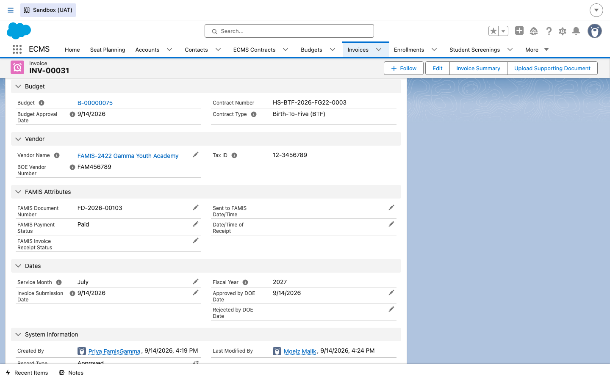
10Advance Payment Invoices (draft BRD)
DO This step describes a separate invoice type an Operational Analyst (OA) can use, rather than something the Invoice Manager does in Steps 1–9 above.
RESULT Per BRD story 3.2.4 “Create & Submit Advance Payment Invoice on Submitted Budget” (Jira key DOEECMS-2419), an Advance Payment Invoice does not wait for the budget to reach Approved by DOE the way a regular invoice does. Per AC 1, the trigger condition is: given a budget is in Submitted or Approved status (an exception applies to legacy budgets, handled under AC 3’s September advance-invoice rule) and the budget is linked with a valid contract number, when the OA navigates to the invoice section, then the system should allow the OA to create an Advance Payment Invoice — and the system automatically adds an identifier so this invoice type is distinguishable at a glance. Per AC 2, once created it still routes to the OD for approval (explicitly not the OA), and only after OD (and any additional required approvers) gives final approval does ECMS send the advance payment request details to FAMIS.
SELECT Id, Name, Status__c, Budget__c FROM ECMS_Invoice__c,
cross-referenced against each linked budget's Status__c) found that every existing
invoice's budget was already Approved by DOE — none were only Submitted.
No ECMS_Invoice__c field or record type for “Advance Payment” exists in the
org's field/record-type metadata yet either. This step is therefore described from the BRD text only,
with no accompanying screenshot, rather than fabricating one.
11Third-level Central Approval for EDY/HS-CTL invoices
DO Open an invoice that includes one or more EDY or Head Start / Head Start-CTL (HS-CTL) seats, after it has already cleared the normal OA → OD chain, and review its stepper and Approval History tab.
RESULT Per BRD story 3.3.12 “Add Third-Level Central
Approval for Invoices with EDY or HS/HS-CTL Seats” (Jira key DOEECMS-2473),
invoices with EDY or HS/HS-CTL seats don't go straight to FAMIS once OA and OD approve — they are
routed to a Central Approvers queue for a third sign-off, with the invoice status
staying Submitted until that last approval is processed. INV-00036
(Id a0sSK000001bbuTYAQ), for the EDY-seat site 2500 UAT Verify EDY Site, shows exactly this:
its Requires_Central_Approval__c field is true, and its stepper carries an
extra approval stage beyond the usual OA/OD pipeline before landing on Approved by DOE.
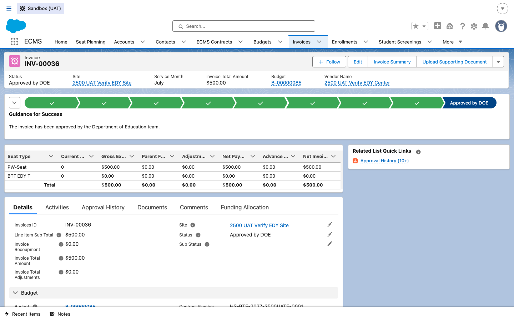
Requires_Central_Approval__c = true, its stepper reflecting the extra Central Approval stage.Its Approval History tab makes the extra step explicit: alongside the familiar OD/DOD Approval rows, there are separate Central Approval rows — including one showing a Central Approver Rejecting an earlier submission, and a later one Approved by the Central Approvers queue, matching AC 3 and AC 4 of DOEECMS-2473 (a Central Approver's approval sends the invoice on to FAMIS; a rejection follows the existing invoice rejection workflow).
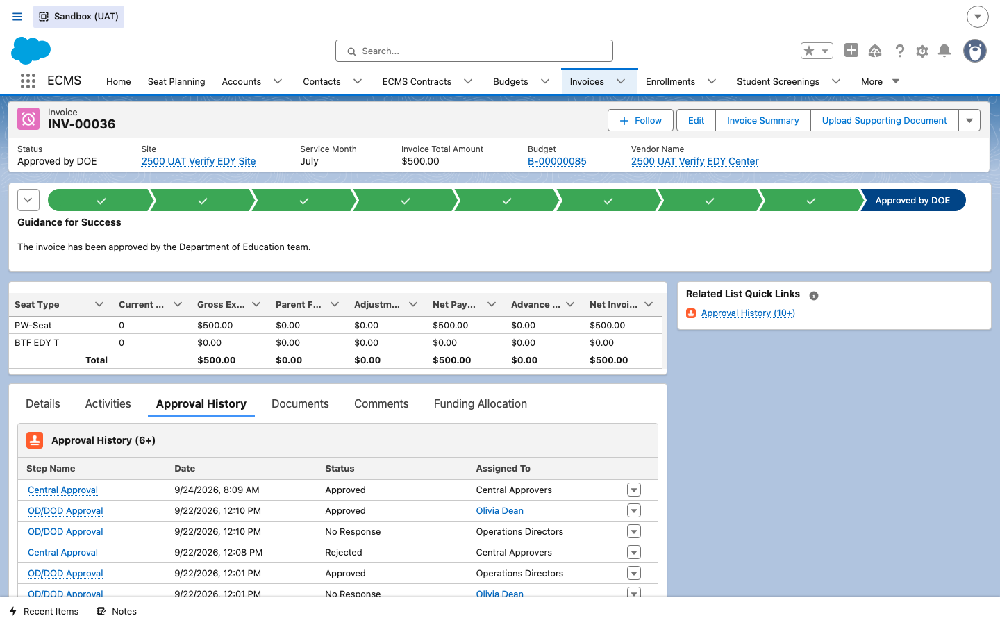
Sub_Status__c picklist on ECMS_Invoice__c also
includes a “Rejected by Central Approver” value for tracking a Central Approver rejection
distinctly from an OA/OD rejection. This story (3.3.12) is documented in the same draft, not-yet-signed
BRD as Step 10 above.